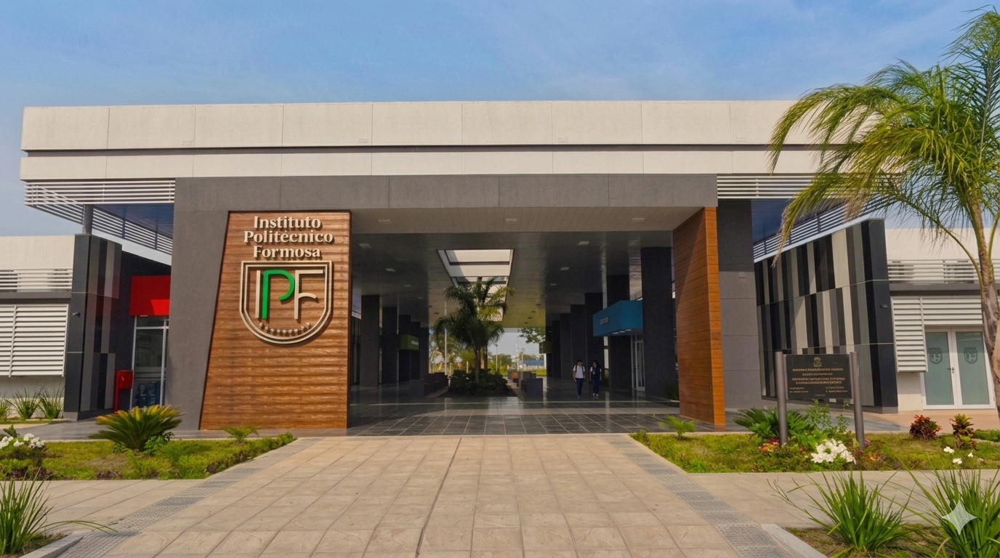
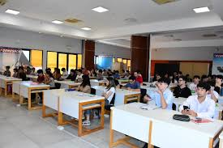
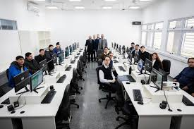

Instituto Politecnico Formosa
El Instituto Politecnico Formosa(IPF) es un institudo donde se forman tecnicos , con conocimientos actuales para el mundo laboral.

Sobre el Instituto
El Instituto Politecnico Formosa (IPF) es una institucion educativa publica de nivel superior ubicada en la provincia de Formosa , Argentina . Fue creado con el objetivo de brindar tecnicatura de calidad , orientada a las necesidades del desarrollo productivo y tecnologico de la region. El Instituto Politécnico es el pilar académico del Polo y dicta cuatro tecnicaturas superiores diseñadas para responder a la demanda de las empresas tecnológicas de la zona:
- Mecatronica : Una de las carreras con mayor trayectoria en la institución.
- Desarrollo de Software Multiplataforma: Es la carrera que suele completar sus cupos primero debido a su alta demanda.
- Telecomunicaciones: Enfocada en la infraestructura de conectividad regional.
- Química Industrial: Creada para proveer profesionales a plantas específicas en el Polo, como la de purificación de uranio (Dioxitek S.A.), biosiderurgia y producción de gases (Avedis).
Mision
Brinda educacion tecnica superior de calidad , formando profecionales capacitados , con conocimientos actualizados y habilidades para integrarse al mundo laboral y contribuir al desarrollo de la region
Vision
Consolidarnos con el sentro educativo tecnico referente en el norte argentino reconocido por la calidad de nuestros egresados , la modernizacion constante de nuestra infraestructura y nuestro impacto transformandor en el mundo laboral actual.

Estructura institucional
La institucion se organiza en diferentes areas academicas y administrativas que permiten el correcto funcionamiento de las carreras , la formacion de los estudiantes y el desarrollo de actividades educativas y tecnologicas.

Entre estas areas se encuentran la direccion , la cordinacion , el cuerpo y el personal administrativo , quienes trabajan en conjunto para garantizar una educacion de calidad
- direccion
- Coordinacion academica
- Docentes
- Area administrativa